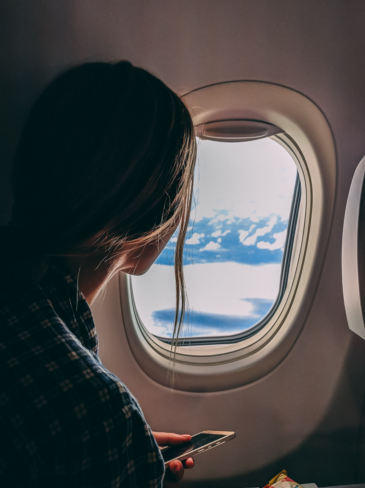

О́тдых — состояние покоя, либо времяпрепровождение, целью которого является восстановление сил, достижение работоспособного состояния организма (рекреация)[1]; время, свободное от работы[2]. Вынужденное бездействие — такое, как ожидание или отбывание наказания, — отдыхом не является. Обычно отдых включает в себя следующие стадии: усталость, расслабление, восстановление сил, развлечение и/или перемена вида деятельности. Занятия для отдыха в стадии развлечения: игры (в том числе компьютерные), еда, беседа, любительский спорт, рекреационное рыболовство, прослушивание музыки, радио, просмотр телевизора, произведений искусства, занятия различными видами искусств, чтение книг, пикник, поход в баню (сауну), волонтерство и другие развлечения и виды деятельности.
